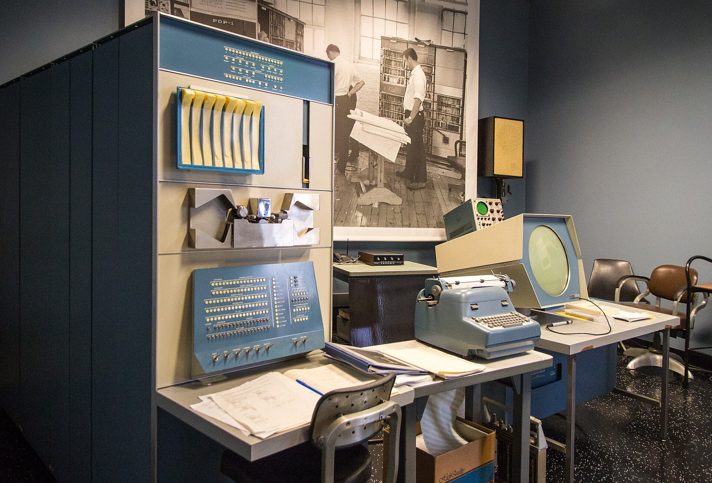
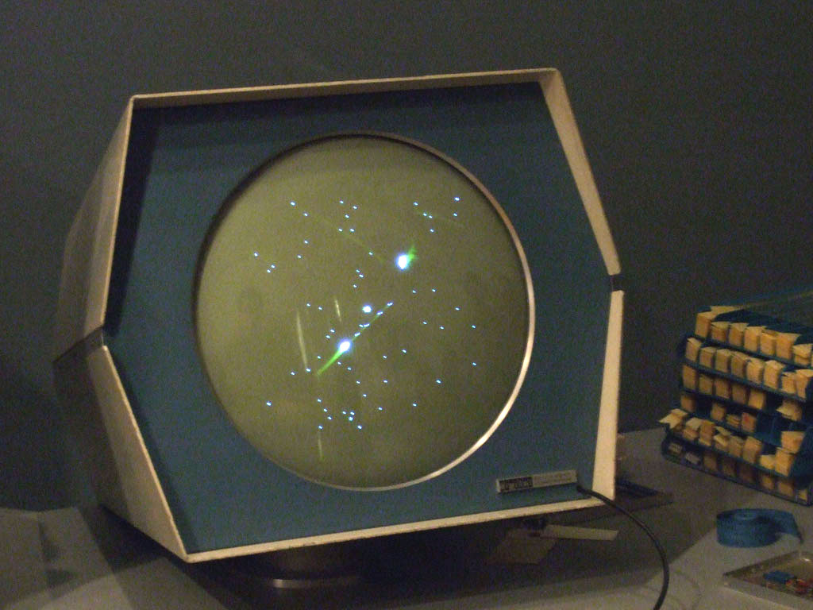
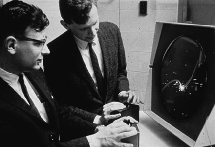
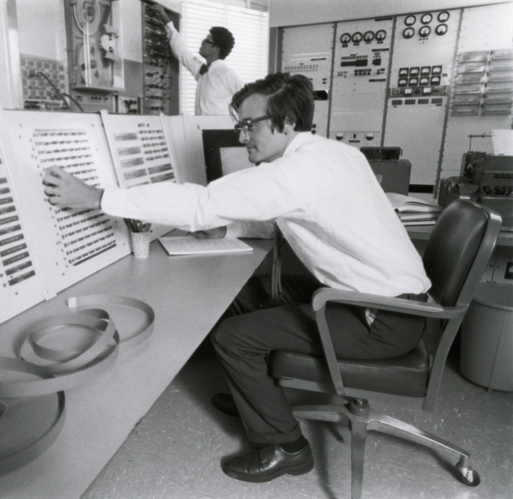
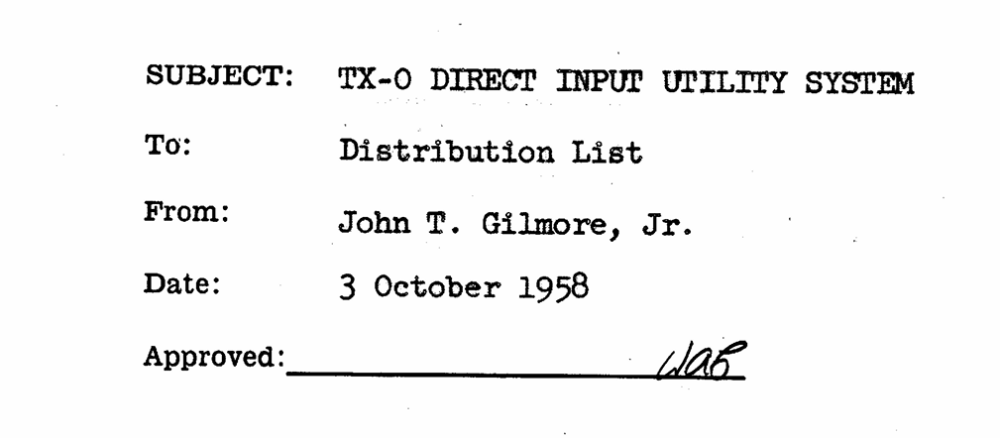
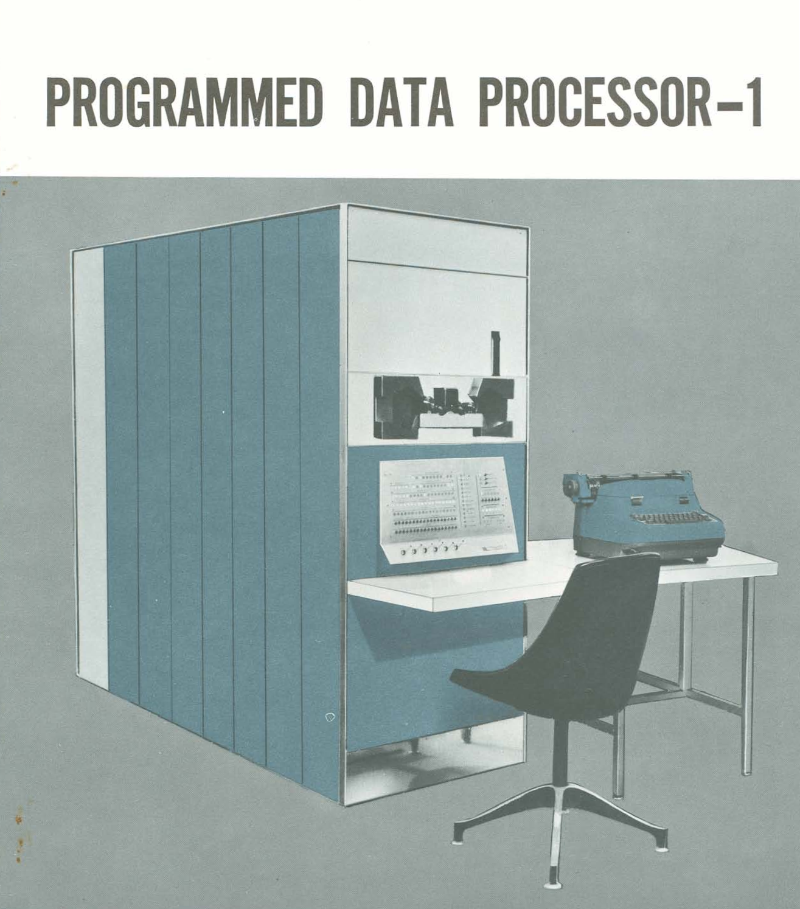
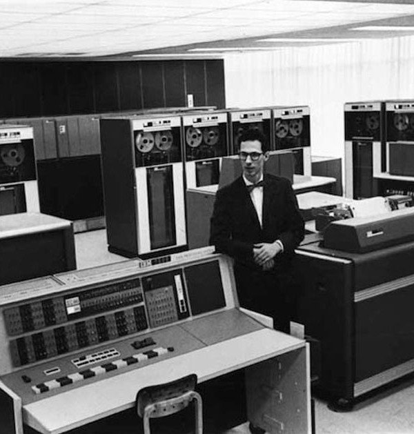
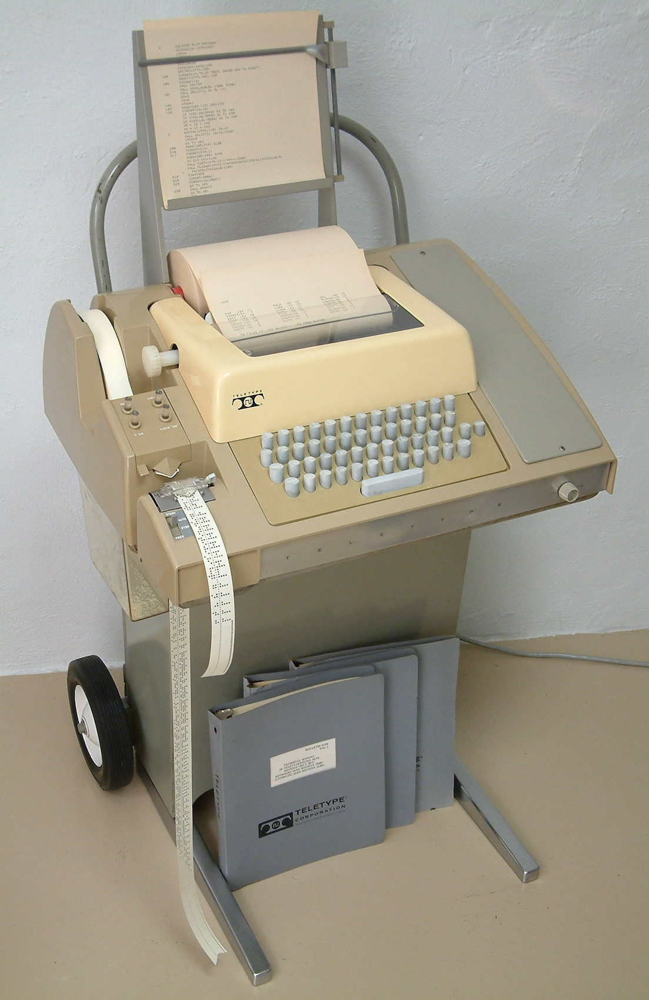
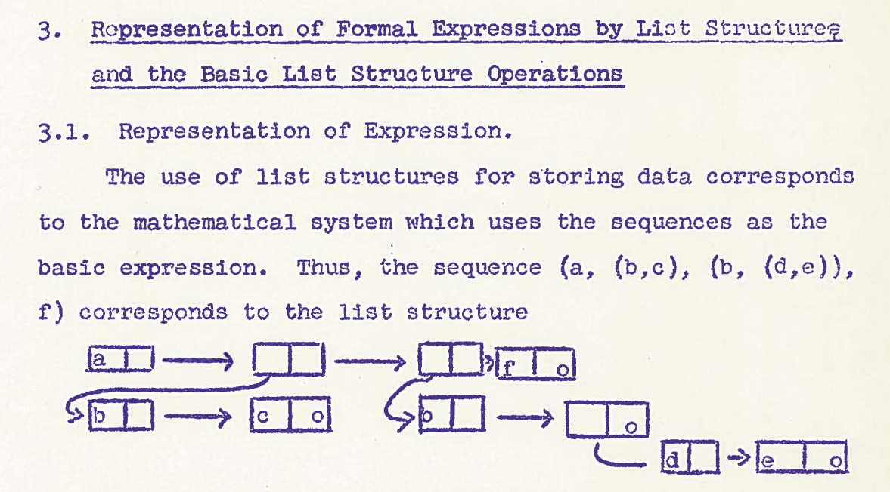
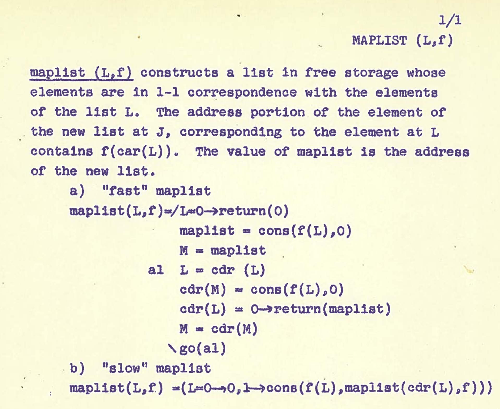

Tomas Petricek, Charles University, Prague


Steve "Slug" Russell & Tech Model Railroad Club (TMRC) members
Sine and cosine story...
"What's your excuse?"
Demo showcasing PDP-1 capabilities


"For the past few years it has been regarded as a great professional sin, but like most sins, it still exists, is rarely talked about, and hardly ever admitted."
Technical innovations


PDP-1 costs $120,000 in 1960 (~1.2M now)
Interactive use too expensive in practice!
Reflected by nicknames

Compatible Time-Sharing System (CTSS), funded by Project MAC (ARPA)
IBM 7094 (mid-1960s)

Way more limited interaction than TX-0!
Slow line-based
input and output
Initially no screen
Different kind of programming is needed...

Code as data becomes an appealing feature for AI!
Meta-programming (aka Recursive Self Improvement)

Programmer's Manual published in 1961
eval written as mathematical model(LAMBDA (X) Y
(COND ((NULL X) Y)
(T (CONS (CAR X)
(APPEND (CDR X) Y)))))
*P
(LAMBDA (X) Y (COND & &)).
*2 P
(X)
*(3)
*(2 (X Y))
*P
(LAMBDA (X Y) (COND & &)).
Fixing wrong argument list (X) Y to (X Y)
P to print outline
2 P to focus and print
(3) to delete third item
(2 (..)) to replace